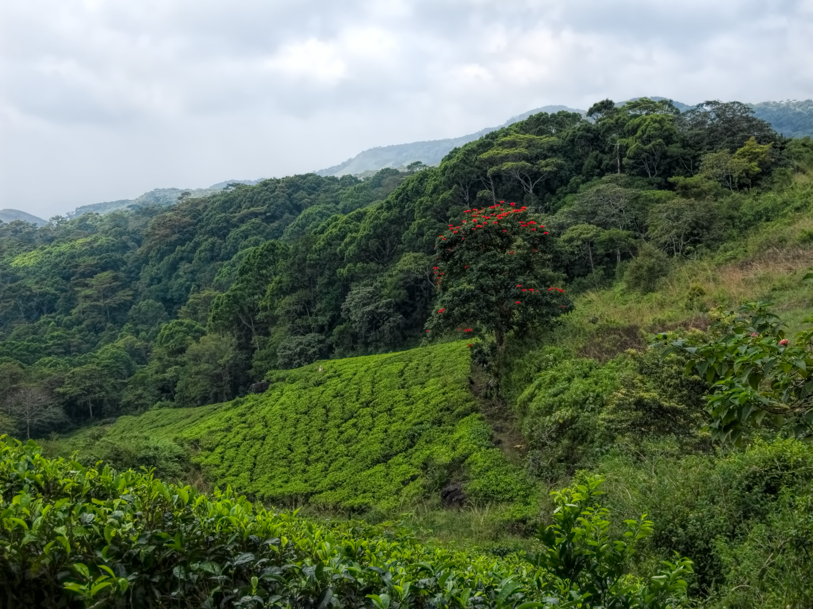
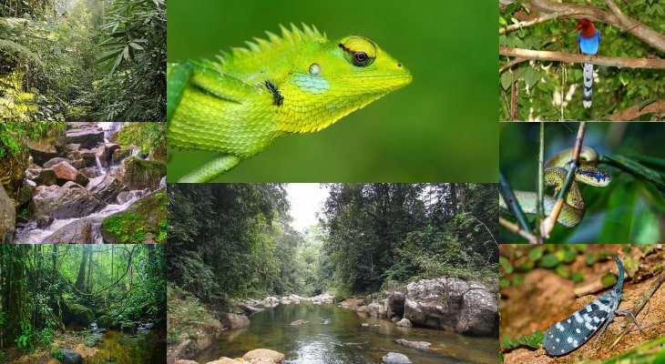

Sinharaja Forest Reserve
Declared as a World Heritage Site by UNESCO, Sinharaja Forest Reserve (kingdom of the lion), is a paradise for nature and wildlife lovers. It is home to a vast number of endemic species of birds and mammals of Sri Lanka. About 95 per cent of Sri Lankan endemic birds and more than 50 per cent of endemic mammals are known to have their habitats in this Forest Reserve.
Year round, the forest is covered by plenty of rain clouds. It is one of the famous places to visit in Galle. You can experience the leisurely pace of wildlife and the splendour of dense and copious evergreen rainforests.
Location: Sinharaja Forest Reserve, Southern Province
Timings: Opens daily from 6:30 AM to 6 PM
Price: Approximate price ranges from INR 260 to INR460 (664 LKR to 1160 LKR)
Location: Sinharaja Forest Reserve, Southern Province
Timings: Opens daily from 6:30 AM to 6 PM
Price: Approximate price ranges from INR 260 to INR460 (664 LKR to 1160 LKR)